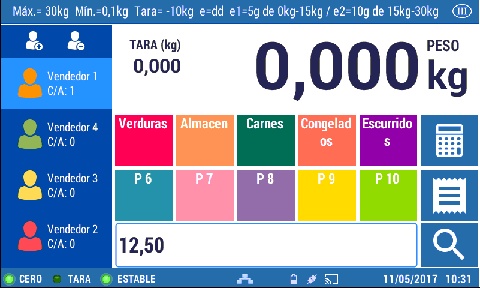
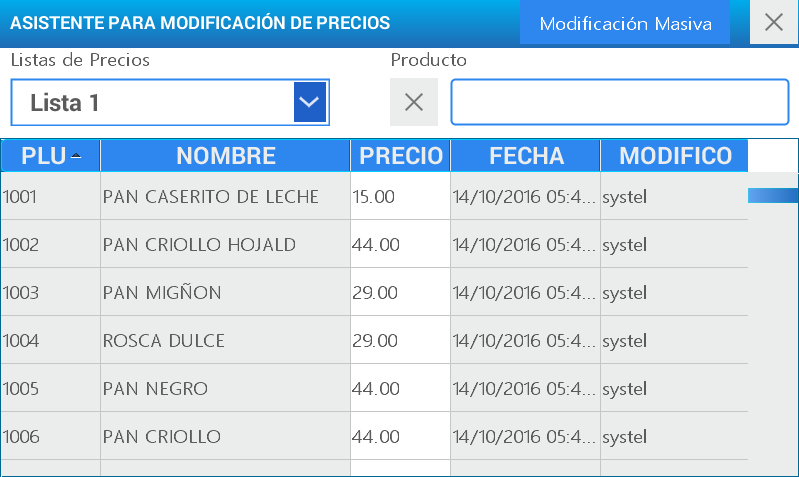
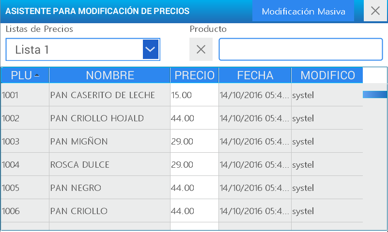
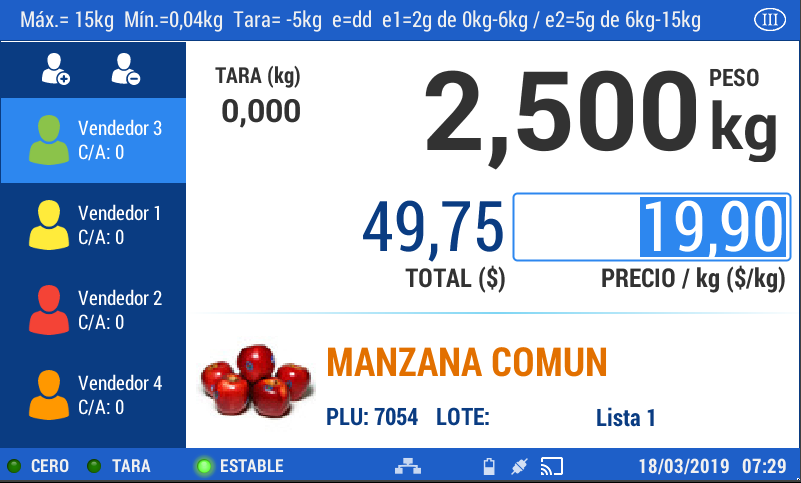
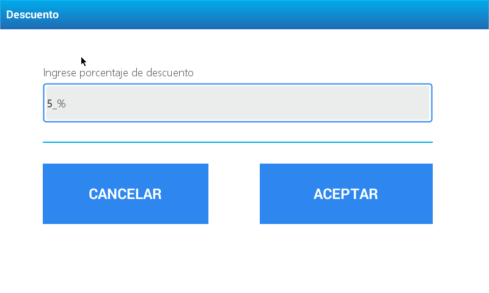

Prices
To make a sale, it is necessary to set a price. The equipment includes a great variety of ways you can do this operation.
At Menu - CRUD’s - Prices- you will find the necessary steps to create, edit, or delete a price list.
The price can be set manually.
This procedure that is generally used when the product has not been previously uploaded in the scale or when it is necessary to change the price due to a specific situation.
Enter the item’s price to be sold using the numeric keypad (using the comma): Example 12,50

Press the key .
Then press .
As the price was set manually and the equipment does not know which article it corresponds to, the item will be identified as UNIT.
The price can be set when generating a PLU.
When creating a PLU, among the setting actions you will find the product’s price assignment. You will find the necessary steps to execute this operation at: Menu - CRUD’s - PLU
The price can be modified from the price list.
Press the menu key , select a user and enter the password, and then the option Price Assistant

From this point on it is possible to modify the prices of a pre-existent price list.
Select Mass modification of prices.

Select the price list you want to modify by selecting the search option.
Select the department by selecting the search option.
Select the group by selecting the search option.
Choose what you wish to modify: some item’s price or all the products’ costs that are included in the selected price list.
Select the action: increase or discount
Select if it is Fixed amount or Percentage.
Enter the amount or percentage.
Press Enter
If you choose “Choose prices to be modified” you must select the products which the action will be applied to. Then press ENTER.

If you opt for “Modify all the prices” you will only see the operation made confirmation message on the screen.
Using different prices for the same product
When a PLU is convened by any of the previously detailed options, the scale will always show the PRICE LIST 1.

If you wish to use the PRICE LIST 2, just press on the screen in the price list’s field, after having convened the item.
Manual occasional assignment of price for a PLU
If for any reason you will need to make a change in the price of the product immediately, as by assigning a new value at the moment of the sale, simply convene the article and press the key

Then enter the product’s price in the numeric keypad
Press
The price field and the one corresponding to the total will be corrected.
On the set field to select the price list you will see the word “Manual”

Press again to change the sale.
Product with an open price
Remember that if any of the prices from the list is left open (Price = 0), the scale will ask you to enter it manually at the moment of the sale.
Example: If a product had a LIST 2 PRICE = $0,00 when convening the PLU, the LIST 1 PRICE will be shown, and by pressing PRICE, it will allow for the manual assignation of a momentary price since it could not find the loaded price in the LIST 2.
Discount percentage
The application of a discount on a product can be done in several ways. One of them is using the Price Assistant. From this option, you can apply discounts in general or for a particular item; and you can choose the cost reduction of a product by percentage or fixed amount.
Apply discount immediately:
Convene the item and press the key
In this option you can assign a discount on the product only by percentage.
Enter the discount to be assigned using the numeric keypad and press Enter

The price with the applied reduction will be corrected.
On the set field to select the price list you will see the word “Manual”.

Press again to make the sale.